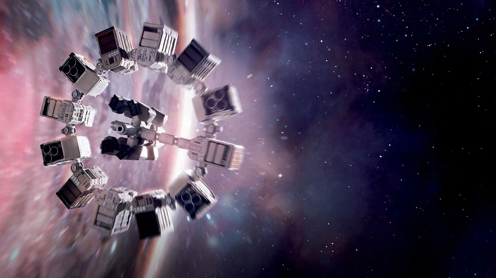

Behind the Scenes of Interstellar
"Interstellar" was produced by Syncopy and Lynda Obst Productions in association with Warner Bros. Pictures. Nolan’s vision required extensive research in advanced physics, consulting with renowned theoretical physicist Kip Thorne to ensure the scientific accuracy of the film’s concepts.
Casting:
- Matthew McConaughey as Cooper: A devoted father and pilot, his performance is central to the film's emotional impact.
- Anne Hathaway as Amelia Brand: A scientist and astronaut, she represents hope and determination.
- Jessica Chastain as Murph: Cooper's daughter, whose journey reflects the film's themes of perseverance and sacrifice.
Reception:
Upon its release, "Interstellar" received critical acclaim for its ambitious narrative, thought-provoking themes, and visual grandeur. It was nominated for five Academy Awards, winning for Best Visual Effects. Audiences praised the film for its emotional depth and intellectual engagement, solidifying its status as a modern classic in the science fiction genre.
Cultural Impact:
"Interstellar" has sparked discussions around space exploration, time travel, and the future of humanity. Its blend of science and storytelling has inspired a new generation of filmmakers and scientists alike.
Conclusion:
With its groundbreaking visuals, compelling performances, and profound themes, "Interstellar" continues to resonate with viewers worldwide, inviting them to ponder the mysteries of the universe and our place within it.